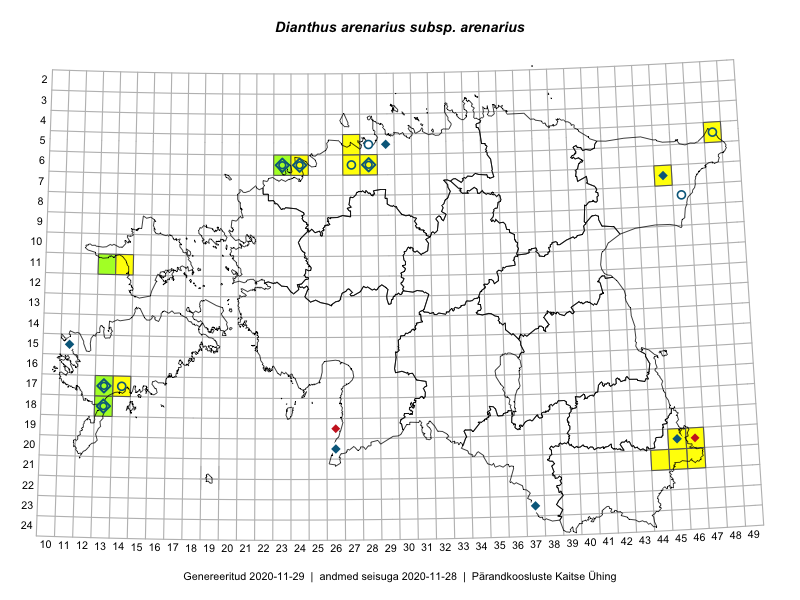

Dianthus arenarius subsp. arenarius — nõmmnelk
Caryophyllaceae :: Dianthus arenarius subsp. arenarius L. (82)

Kaart põhineb 82 kirjel:
vaatlusi 42
herbaareksemplare 40
Taime kaasaegsed ja ajaloolised leiukohad asuvad 18 ruudus.
Tingmärgid ja ruutude arvud periooditi (U1 / V2 )
█ 2006–2020 (15/–)
◆/◇ 1971–2005 (6/11)
○ 1921–1970 (8/1)
+ kuni 1920 (0/0)
× hävinud (–/0)
? kaheldav (–/0)
| Ruut | Leidja(d) | Leiuaeg | Kirje |
|---|---|---|---|
| 07-45 | V. Kuusk | 2001-07-04 | ruut/ala: Dianthus arenarius subsp. arenarius L. |
| 21-45 | Toomas Kukk, Kersti Tambets, Sten Mander, Janika Sammasto, Timo Luhamäe | 2014-07-30 | ruut/ala: Dianthus arenarius subsp. arenarius L. |
| 21-45 | Toomas Kukk, Kersti Tambets, Timo Luhamäe, Janika Sammasto, Sten Mander | 2014-07-30 | ruut/ala: Dianthus arenarius subsp. arenarius L. |
| 11-14 | Eeva-Maria Jeletsky, Tarmo Niitla | 2015-06-28 | ruut/ala: Dianthus arenarius subsp. arenarius L. |
| 06-24 | Erkki Otsman, Sergei Smirnov | 2015-05-29 | ruut/ala: Dianthus arenarius subsp. arenarius L. |
| 17-13 | Mari Reitalu, Sirje Azarov | 2015-05-12 | ruut/ala: Dianthus arenarius subsp. arenarius L. |
| 17-14 | Mari Reitalu, Sirje Azarov | 2015-05-12 | ruut/ala: Dianthus arenarius subsp. arenarius L. |
| 06-24 | Erkki Otsman, Sergei Smirnov | 2015-05-29 | ruut/ala: Dianthus arenarius subsp. arenarius L. |
| 18-13 | Mari Reitalu | 2014-06-14 | ruut/ala: Dianthus arenarius subsp. arenarius L. |
| 18-13 | Mari Reitalu, Oliver Parrest | 2015-05-27 | ruut/ala: Dianthus arenarius subsp. arenarius L. |
| 06-24 | Jaak-Albert Metsoja, Mari Metsoja, Ott Luuk | 2015-06-05 | ruut/ala: Dianthus arenarius subsp. arenarius L. |
| 06-23 | Mari Metsoja, Jaak-Albert Metsoja, Ott Luuk | 2015-06-04 | ruut/ala: Dianthus arenarius subsp. arenarius L. |
| 18-13 | Oliver Parrest, Mari Reitalu | 2015-05-27 | ruut/ala: Dianthus arenarius subsp. arenarius L. |
| 06-28 | Toomas Kukk | 2016-06-02 | ruut/ala: Dianthus arenarius subsp. arenarius L. |
| 06-28 | Toomas Kukk | 2016-06-06 | ruut/ala: Dianthus arenarius subsp. arenarius L. |
| 06-28 | Toomas Kukk | 2016-06-06 | ruut/ala: Dianthus arenarius subsp. arenarius L. |
| 06-28 | Toomas Kukk | 2016-06-06 | ruut/ala: Dianthus arenarius subsp. arenarius L. |
| 06-28 | Toomas Kukk | 2016-06-02 | ruut/ala: Dianthus arenarius subsp. arenarius L. |
| 20-46 | Meeli Mesipuu, Timo Luhamäe | 2016-06-14 | ruut/ala: Dianthus arenarius subsp. arenarius L. |
| 21-44 | Toomas Kukk, Tiit Hallikma, Johannes Kõdar | 2016-06-14 | ruut/ala: Dianthus arenarius subsp. arenarius L. |
| 21-45 | Toomas Kukk, Tiit Hallikma, Johannes Kõdar | 2016-06-14 | ruut/ala: Dianthus arenarius subsp. arenarius L. |
| 11-13 | Thea Kull, Peedu Saar | 2016-08-10 | ruut/ala: Dianthus arenarius subsp. arenarius L. |
| 06-27 | Erkki Otsman, Sergei Smirnov | 2016-07-12 | ruut/ala: Dianthus arenarius subsp. arenarius L. |
| 21-46 | Timo Luhamäe, Meeli Mesipuu | 2016-06-14 | ruut/ala: Dianthus arenarius subsp. arenarius L. |
| 06-24 | Jaak-Albert Metsoja, Mari Metsoja, Ott Luuk | 2015-06-05 | ruut/ala: Dianthus arenarius subsp. arenarius L. |
| 06-23 | Jaak-Albert Metsoja, Mari Metsoja, Ott Luuk | 2015-06-05 | ruut/ala: Dianthus arenarius subsp. arenarius L. |
| 06-23 | Jaak-Albert Metsoja, Mari Metsoja, Ott Luuk | 2015-06-04 | ruut/ala: Dianthus arenarius subsp. arenarius L. |
| 06-23 | Jaak-Albert Metsoja, Mari Metsoja, Ott Luuk | 2015-06-04 | ruut/ala: Dianthus arenarius subsp. arenarius L. |
| 17-14 | Mari Reitalu | 2007-07-17 | ruut/ala: Dianthus arenarius subsp. arenarius L. |
| 17-13 | Mari Reitalu | 2007-07-17 | ruut/ala: Dianthus arenarius subsp. arenarius L. |
| 17-14 | Mari Reitalu | 2008-09-05 | ruut/ala: Dianthus arenarius subsp. arenarius L. |
| 06-24 | Ilmar Uibopuu, Kadri Kuusksalu | 2017-07-27 | ruut/ala: Dianthus arenarius subsp. arenarius L. |
| 06-24 | Toomas Kukk, Ilmar Uibopuu, Kadri Kuusksalu | 2017-07-26 | ruut/ala: Dianthus arenarius subsp. arenarius L. |
| 06-23 | Toomas Kukk, Ilmar Uibopuu, Kadri Kuusksalu | 2017-07-26 | ruut/ala: Dianthus arenarius subsp. arenarius L. |
| 06-23 | Toomas Kukk | 2017-07-27 | ruut/ala: Dianthus arenarius subsp. arenarius L. |
| 21-45 | Meeli Mesipuu | 2017-07-12–2017-07-13 | ruut/ala: Dianthus arenarius subsp. arenarius L. |
| 21-44 | Meeli Mesipuu | 2017-07-17–2017-07-20 | ruut/ala: Dianthus arenarius subsp. arenarius L. |
| 07-45 | Meeli Mesipuu | 2017-07-25 | ruut/ala: Dianthus arenarius subsp. arenarius L. |
| 06-24 | Rein Kalamees | 2017-07-27 | ruut/ala: Dianthus arenarius subsp. arenarius L. |
| 06-23 | Ott Luuk, Meeli Mesipuu, Jaak-Albert Metsoja, Mari Metsoja | 2018-07-05 | ruut/ala: Dianthus arenarius subsp. arenarius L. |
| 05-27 | Meeli Mesipuu | 2019-06-22 | ruut/ala: Dianthus arenarius subsp. arenarius L. |
| 17-13 | Mari Reitalu | 2019-06-05 | ruut/ala: Dianthus arenarius subsp. arenarius L. |
| 06-24 | A. Vaga | 1933-06-19 | TU255918: Dianthus arenarius subsp. arenarius L. |
| 06-23 | H.-E. Rebassoo | 1955-07-16 | TU255922: Dianthus arenarius subsp. arenarius L. |
| 06-24 | A. Vaga | 1932-07-06 | TU255925: Dianthus arenarius subsp. arenarius L. |
| 06-24 | 1921-06-26 | TU255926: Dianthus arenarius subsp. arenarius L. | |
| 06-24 | A. Remmel | 1958-06-19 | TU255933: Dianthus arenarius subsp. arenarius L. |
| 06-23 | K. Eichwald | 1960-07-14 | TU255963: Dianthus arenarius subsp. arenarius L. |
| 06-23 | K. Eichwald | 1960-07-14 | TU255964: Dianthus arenarius subsp. arenarius L. |
| 06-23 | K. Eichwald | 1960-07-14 | TU255965: Dianthus arenarius subsp. arenarius L. |
| 17-14 | Elmar Lepik | 1931-07-08 | TU258583: Dianthus arenarius subsp. arenarius L. |
| 06-24 | K. Eichwald | 1939-06-25 | TU258586: Dianthus arenarius subsp. arenarius L. |
| 06-24 | Peeter Ernits | 1994-06-22 | TAM0003307: Dianthus arenarius subsp. arenarius L. |
| 06-27 | E. Peikel | 1945-06-21 | TAM0003315: Dianthus arenarius subsp. arenarius L. |
| 06-28 | Uve Ramst | 1985-07-04 | TAM0003319: Dianthus arenarius subsp. arenarius L. |
| 06-28 | Uve Ramst | 1985-07-04 | TAM0003320: Dianthus arenarius subsp. arenarius L. |
| 05-48 | A. Üksip | 1926-08-03 | TAM0003637: Dianthus arenarius subsp. arenarius L. |
| 05-28 | Paul W. Thomson | 1921-06-05 | TAM0003640: Dianthus arenarius subsp. arenarius L. |
| 06-24 | V. Kasak | 1948-08-01 | TAM0003641: Dianthus arenarius subsp. arenarius L. |
| 05-48 | Gustav Vilbaste | 1928-08-04 | TAM0003642: Dianthus arenarius subsp. arenarius L. |
| 08-46 | Hugo Salasoo | 1932-06-24 | TAM0003644: Dianthus arenarius subsp. arenarius L. |
| 05-28 | Gustav Vilbaste | 1947-06-23 | TAM0003645: Dianthus arenarius subsp. arenarius L. |
| 05-28 | H. Sogenbits | 1926-06-16 | TAM0003646: Dianthus arenarius subsp. arenarius L. |
| 05-28 | Gustav Vilbaste | 1947-07-14 | TAM0003647: Dianthus arenarius subsp. arenarius L. |
| 06-28 | Gustav Vilbaste | 1947-07-14 | TAM0003648: Dianthus arenarius subsp. arenarius L. |
| 06-23 | Gustav Vilbaste | 1948-08-03 | TAM0003649: Dianthus arenarius subsp. arenarius L. |
| 06-27 | E. Peikel | 1945-06-21 | TAM0003650: Dianthus arenarius subsp. arenarius L. |
| 06-28 | J.-M. Habicht | 2005-06-28 | TAM0004148: Dianthus arenarius subsp. arenarius L. |
| 17-13 | J.-M. Habicht | 2008-07-12 | TAM0014282: Dianthus arenarius subsp. arenarius L. |
| 18-13 | Uve Ramst | 2004-06-27 | TAM0014760: Dianthus arenarius subsp. arenarius L. |
| 18-13 | J.-M. Habicht | 2009-07-13 | TAM0015609: Dianthus arenarius subsp. arenarius L. |
| 06-23 | Jana-Maria Habicht | 2004-06-10 | TAM0073351: Dianthus arenarius subsp. arenarius L. |
| 11-13 | Peedu Saar, Thea Kull | 2016-08-10 | TAA0133158: Dianthus arenarius subsp. arenarius L. |
| 06-23 | M. Simson | 1960-07-14 | TAA0150637: Dianthus arenarius subsp. arenarius L. |
| 06-23 | M. Simson | 1960-07-14 | TAA0150638: Dianthus arenarius subsp. arenarius L. |
| 06-24 | Visolde Puusepp, Alma Saare | 1960-07-14 | TAA0150642: Dianthus arenarius subsp. arenarius L. |
| 06-24 | Visolde Puusepp, Alma Saare | 1960-07-14 | TAA0150643: Dianthus arenarius subsp. arenarius L. |
| 06-23 | Viiu Hein, Vilma Kuusk | 1960-07-14 | TAA0150645: Dianthus arenarius subsp. arenarius L. |
| 06-24 | Linda Viljasoo | 1980-08-11 | TAA0150659: Dianthus arenarius subsp. arenarius L. |
| 17-13 | Raino Lampinen, Tuula Lampinen | 1993-08-12 | TAA0150661: Dianthus arenarius subsp. arenarius L. |
| 06-23 | Ott Luuk, Jaak-Albert Metsoja | 2015-06-04 | TAA0151598: Dianthus arenarius subsp. arenarius L. |
| 06-23 | Ott Luuk, Meeli Mesipuu | 2018-07-05 | TAA0151601: Dianthus arenarius subsp. arenarius L. |
Ruutude arv uue atlase andmekogu järgi. Muuhulgas arvestab vanemat herbaariumi, 2005. aasta atlase välitöölehtedelt uuesti digitaliseeritud andmeid jne. Uue atlase andmekogust pärinevad andmed on kaardile kantud siniste sümbolitega.↩︎
Ruutude arv 2005. aasta atlase (Kukk, T., Kull, T., Eesti taimede levikuatlas. Eesti Maaülikool, Põllumajandus- ja Keskkonnainstituut, Tartu, 2005) järgi. Andmeallikana on kasutatud levik.exe programmi, kus igas ruudus on registreeritud vaid uusim leid. Seetõttu on vanemate perioodide kohta andmed puudulikud. Kasutatud levik.exe andmestikus leidub mõningaid kõrvalekaldeid atlase trükis ilmunud versioonist, sagedamini tarnade ja käpaliste seas. Lisaks leidub selles andmestikus valik liike (peamiselt väheste leidudega tulnuktaimed), mille kaarte trükis ei avaldatud. Vana atlase andmed ruutudest, milles ei ole uue atlase andmekogus leide enne 2006. aastat, on kaardil esitatud punaste sümbolitega. Vana atlase andmetel hävinud ja kaheldavaid leiukohti pole hilisemate (taas)leidude põhjal korrigeeritud.↩︎